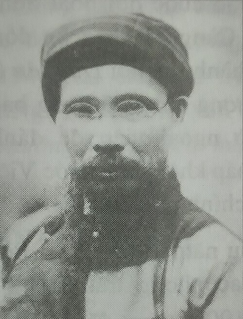
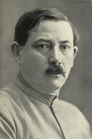
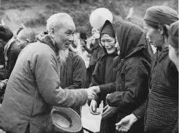

HỒ SƠ NHÂN VẬT ĐỒNG HÀNH
Tư liệu lịch sử chi tiết về những người Thầy truyền lửa, những người Bạn nâng đỡ và những người Đồng chí keo sơn của Chủ tịch Hồ Chí Minh
TRƯỚC NĂM 1911
Chương I: Việt Nam - Khởi hành & Những người Thầy

Phan Bội Châu
Sĩ phu yêu nước tiên phongTrương Công Định
Ngọn cờ ái quốc Nam KỳNĂM 1911 - 1923
Chương II: Pháp, Anh, Mỹ - Ánh sáng phương Tây

Phan Văn Trường
Luật sư yêu nước tại Paris
O. Mandenxtam
Nhà thơ & Nhà báo quốc tếNĂM 1923 - 1924
Chương III: Liên Xô - Cội nguồn Ánh sáng

V.I. Lenin
Lãnh tụ Cách mạng Vô sản
D. Manuilsky
Ủy viên Quốc tế Cộng sảnNĂM 1924 - 1941
Chương IV: Trung Quốc & Thái Lan - Gieo hạt giống Cách mạng

Mikhail Borodin
Cố vấn chính trị Liên XôTống Khánh Linh
Biểu tượng nhân đạo Trung HoaNĂM 1941
Chương V: Việt Nam - Trở về & Khởi nghĩa
Võ Nguyên Giáp
Đại tướng của Nhân dân